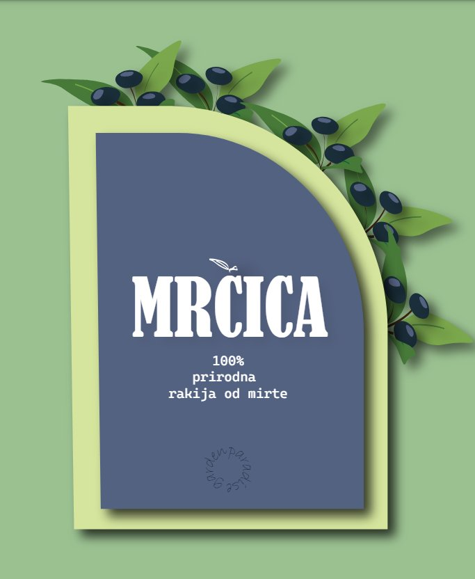
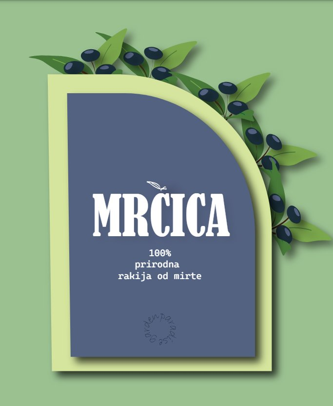
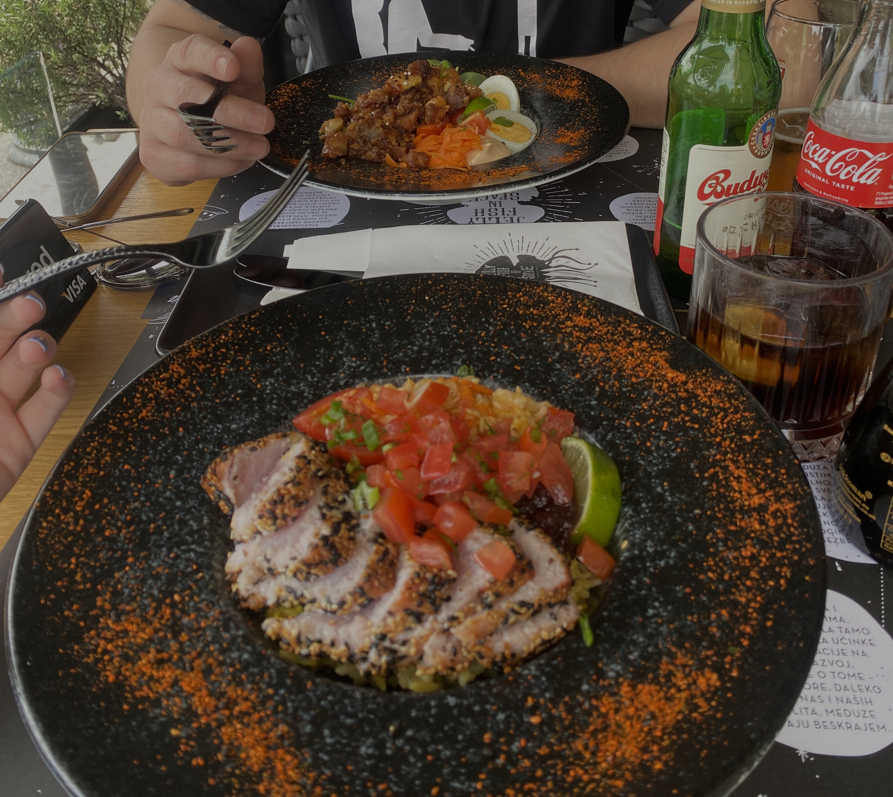

Zovem se Karla Radibratović. Dolazim s Pelješca. Iz malenog mjesta Ston, koji je najpoznatiji po svojim zidinama, koje su sa svojih 5.5km druge najduže zidine na svijetu, odmah nakon Kineskog zida. Osim zidina, u Stonu možete pronaći najstariju solanu u Europi koja proizvodi sol na isti način kao u doba Rimljana. Sviram flautu u Limenoj glazbi Ston.
Ja kroz fotografije:
Moji radovi:
 

Moji hobiji:
